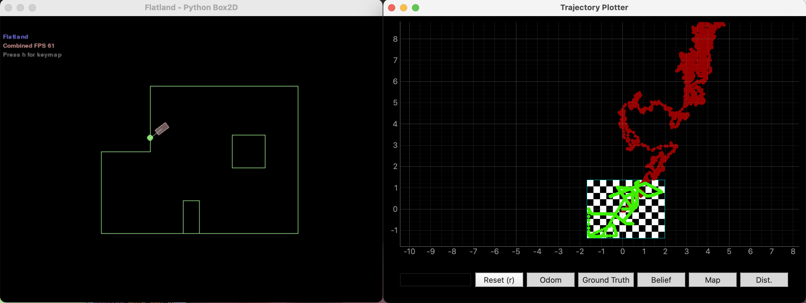
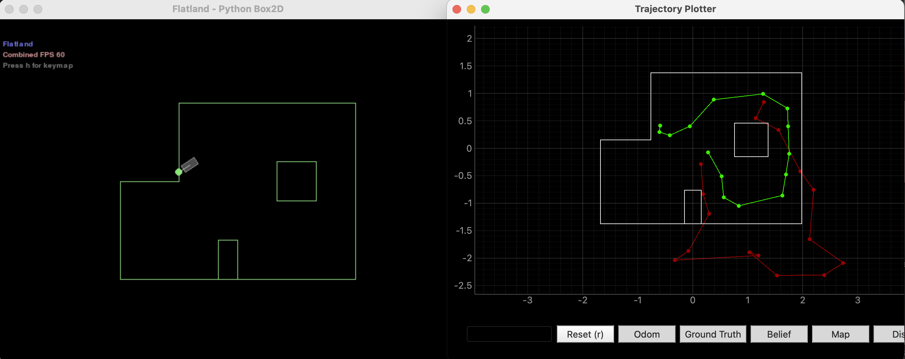
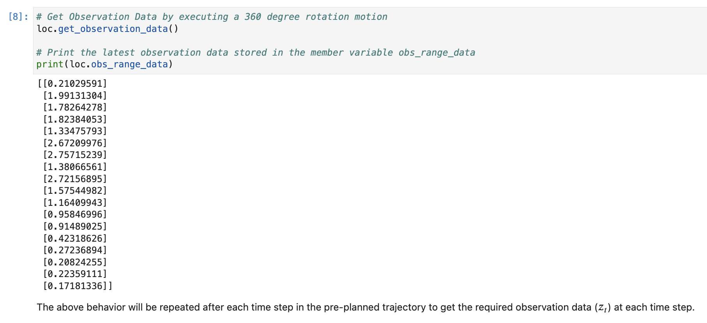
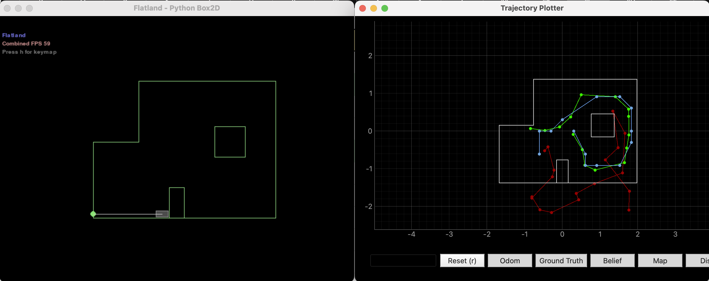

This lab is all about grid localization using a Bayes filter, done entirely in simulation. The robot's state space gets chopped into a 12×9×18 grid and the filter goes back and forth between a prediction step and an update step to figure out where the robot is.
Getting the simulator running on my Mac was annoying because Anaconda's Qt was fighting with PyQt6. I had to manually set the Qt plugin path at the top of the notebook before any imports; that fixed it.

Running the sample trajectory without the filter makes it obvious why we need this. Ground truth (green) stays inside the room but odometry (red) just drifts off into space.

The robot does a full 360° rotation to collect 18 ToF readings for the sensor model.

compute_control takes two poses and breaks the motion down into rot1, trans, and rot2. Then odom_motion_model checks how likely the actual observed control is given a hypothetical state transition; it treats each component as an independent Gaussian.
This goes through every (prev_state, cur_state) pair and builds up the prior belief. The grid has 1944 cells so that's a lot of pairs; I skip any cell with belief below 0.0001 because otherwise each prediction step takes minutes.
for prev_i, prev_j, prev_k in all_prev_states:
if loc.bel[prev_i, prev_j, prev_k] < 0.0001:
continue # skip negligible states
for cur_i, cur_j, cur_k in all_cur_states:
loc.bel_bar[cur_i, cur_j, cur_k] += (
odom_motion_model(cur_pose, prev_pose, u) * prior
)
My first version used np.prod(likelihoods) for the joint probability of all 18 beams, but multiplying 18 small Gaussian densities caused floating-point underflow. Every cell ended up at zero which was confusing. The fix was working in log space instead.
# Log-space to avoid underflow
log_p = np.sum(np.log(likelihoods + 1e-300)) + np.log(prior)
# ... after all cells ...
loc.bel = np.exp(log_bel - max_log)
loc.bel /= np.sum(loc.bel)
Even after fixing the underflow the sensor model was completely overpowering the motion prior. The belief would just snap to whatever cell had the best sensor match regardless of motion history. Widening the sensor noise by 2× (loc.sensor_sigma * 2) softened things enough to let the prediction step actually matter.
The filter ran for 16 trajectory steps. Blue dots are the most probable cell at each step; green is ground truth and red is odometry.

The filter does well when the robot is near walls or the central obstacle. Iterations 6 through 9 placed the belief at (1.524, 0.305) while ground truth ranged from (1.558, -0.207) to (1.357, 0.963); the x-error stayed under 20cm for most of those. This part of the room has enough geometry around it that the 18 ToF readings can actually distinguish it from other cells.
In the open middle of the room (iterations 0 through 5 and 10 through 15), the belief just snaps to (0, 0) regardless of where the robot is. The sensor readings from open space look the same from a bunch of different cells so the update step can't tell them apart, and the motion model spreads probability too thin to help.
Collaborations: Used claude for filter implementation debugging and the underflow fixing, as well as wrangling my laptop into letting me run the sim. Rajarshi for sitting next to me and stealing my iced tea.